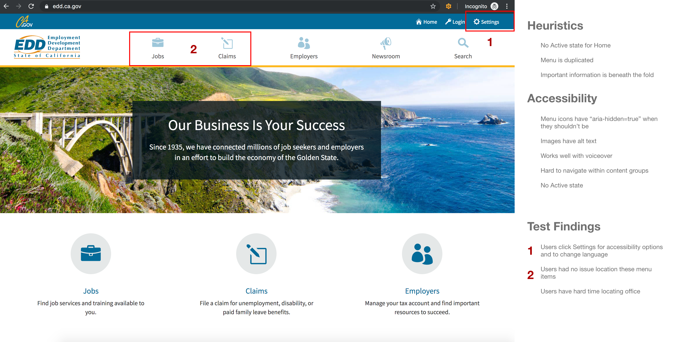

The objective of this case study is to redesign the website of the EDD (Employment Development Department). The EDD allows American citizens residing in California to learn more about how to obtain their benefits should anything occur. Users also have an opportunity to search for their new dream position using the CalJobs Portal page.
The EDD (Employment Development Department) is a government organization in California dedicated to help working individuals obtain certain benefits, and search for new jobs using a portal called CalJobs. However, the website is very disorganized. This makes it difficult for the user to complete their necessary tasks.
How might I redesign this website so that users can easily get to the CalJobs page?
My process for this project had a major emphasis on research. I needed to understand this website so that I could create a cohesive and simple design.
I had limited knowledge about this organization. I took a look at the original designs of the website. I conducted a heuristic analysis on these screens. My goal was to understand the primary issues regarding the overall aesthetic and function of this website.

The main problems were repetition and function. The logos and their descriptions could be found in two locations. On the first image, you can see a bunch of links on the screen. A couple of those links were either broken or did not provide the necessary information. In order to create a potential solution, I did a card sorting activity:
This activity allowed me to create a simple sitemap for the new design.
I shifted my focus from organization to function. I had originally browsed through the website and noted what the pain points were, but I wanted to know if someone else (ideally the target audience) would run into these same issues. I conducted a user test. I gave the user the following task: Get to the CalJob Portal page. This is the page that will allow the user to search for their next dream job.
I gathered all my research and created the wireframes for my new design. I started with the Desktop prototype so that I could organize the screens properly.
I wanted to make my design responsive so I created a wireframe for the mobile version.

While I was working on the project, I realized that I wanted to challenge myself as a designer. So I thought why not try and create a version for a smart watch (e.g. Apple Watch). Obviously a user cannot enter any personal information on a watch. The purpose of the Apple Watch prototype is so that users can get notifications about the progress of the forms that they have filed.
Once I finalized how to organize the screens, I worked on creating a style guide.
I converted all of the wireframes into final designs using Adobe XD.
.png)
This was one of the projects that taught me multiple lessons. I learned the importance of clarity in design. When a designer is creating a website that is intended for multiple users, it is important to make sure that the user can easily navigate the site. I also learned about my capabilities as a designer. When my classmates found out that I was going to make it responsive for the Apple Watch, a few of them thought I was crazy. However, I’m glad that I attempted this challenge. At this point, I felt familiar working with Adobe XD so I thought it would be a good idea to try and advance my skill set.